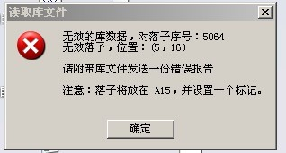

终结者创建的棋谱,RENLIB打不开,有何解决办法?
#1 终结者创建的棋谱,RENLIB打不开,有何解决办法? 作者：极地剑客 发表时间：2010-9-3 22:27:25
RT~~~~~~~~~~~~~［ 龙小小 于 2010-9-5 21:06:04 时花20金币送鲜花一朵］
#2 Re:终结者创建的棋谱,RENLIB打不开,有何解决办法? 作者：屏蔽 发表时间：2010-9-4 0:49:50
终结者默认创建的不就是.lib么？#3 Re:终结者创建的棋谱,RENLIB打不开,有何解决办法? 作者：极地剑客 发表时间：2010-9-4 7:50:26
NO~不是楼上这种情况~情况如此图

接着就是不能打开XXX棋谱~然后就是是否保存无效库~
［此帖子已被 极地剑客 在 2010-9-4 7:50:40 编辑过］
［此帖子已被 极地剑客 在 2010-9-4 7:52:52 编辑过］
［此帖子已被 极地剑客 在 2010-9-4 7:54:33 编辑过］
#4 Re:终结者创建的棋谱,RENLIB打不开,有何解决办法? 作者：极地剑客 发表时间：2010-9-4 8:01:53
用终结者做谱还可以~看谱还是习惯RENLIB些~可惜看不起了~悲剧了啊~#5 Re:终结者创建的棋谱,RENLIB打不开,有何解决办法? 作者：屏蔽 发表时间：2010-9-4 10:13:37
那个意思是有一个子放在了非法的位置#6 Re:终结者创建的棋谱,RENLIB打不开,有何解决办法? 作者：极地剑客 发表时间：2010-9-4 12:55:06
谱用终结者系列软件当然都能打开~关键是RENLIB打不开~悲剧啊~#7 Re:Re:终结者创建的棋谱,RENLIB打不开,有何解决办法? 作者：极地剑客 发表时间：2010-9-4 13:05:06
引用：
原文由 屏蔽 发表于 2010-9-4 10:13:37 :
那个意思是有一个子放在了非法的位置你找到一个分支，其中有一个A15的子，删掉就可以了你先试试做出的谱用终结者/iwzq打谱软件能不能打开一般来说不会出现这种情况的如果是坐标A15那么就不是非法位置了~A15在棋盘上能显示的~~首先是无效数据库~然后无效落子~~以前好象也有人提出过这种的问题~~好象还有一种类似情况是高版本RENLIB创建LIB~低版本打不开~也是这么显示的~~~
看来这谱悲剧了~只能终结者看了~不是很习惯~不知道小四有解决办法不~
#8 Re:终结者创建的棋谱,RENLIB打不开,有何解决办法? 作者：屏蔽 发表时间：2010-9-4 13:36:08
你试过没？非法的子也必须有位置。或者你看哪些子重复了……总之删掉一些分支试试吧。#9 Re:终结者创建的棋谱,RENLIB打不开,有何解决办法? 作者：极地剑客 发表时间：2010-9-4 14:35:11
试过了~没有很远的~按提示上说的坐标可能是05,16~有一路超过15路棋盘线了~那个A15的意思可能是要提示你把棋子摆进来一格?不太懂原理~按字面应该是这样的~因为终结者算棋卡住时~你点暂停~他会在棋盘边界上或者超过边界的地方丢上一子~估计是这样造成的~不懂设计原理~只好请教小四了~
另外李道长~你自己谱多大来着~好奇~据说你都不使用软件拆棋了~很强大啊~
#10 Re:终结者创建的棋谱,RENLIB打不开,有何解决办法? 作者：屏蔽 发表时间：2010-9-4 16:52:07
我没什么谱，最近才感觉光练棋获得的提高差不多了，刚开始补充棋谱和做一些研究。［ 极地剑客 于 2010-9-4 21:22:40 时花20金币送鲜花一朵］
#11 Re:终结者创建的棋谱,RENLIB打不开,有何解决办法? 作者：小帮帮 发表时间：2010-9-4 17:05:30
膜拜楼上两位大师
#12 Re:终结者创建的棋谱,RENLIB打不开,有何解决办法? 作者：小玄 发表时间：2010-9-5 12:06:47
选删除全部非法着法,应该就可以看了［ 极地剑客 于 2010-9-5 13:54:47 时花20金币送鲜花一朵］
#13 Re:Re:终结者创建的棋谱,RENLIB打不开,有何解决办法? 作者：极地剑客 发表时间：2010-9-5 13:56:51
引用：大师的方法管用~可惜的是~发现棋谱减少了4分之1了~~删除所有非法着法的原理是?不会连正确的走删除了吧~~其中只有10KB是在终结者里创建的~其他之前是RENLIB创建的~但是删除非法着法后~大于10KB的谱不见了~郁闷啊~
原文由 小玄 发表于 2010-9-5 12:06:47 :
选删除全部非法着法,应该就可以看了［ 极地剑客 于 2010-9-5 13:54:47 时花20金币送鲜花一朵］
#14 Re:终结者创建的棋谱,RENLIB打不开,有何解决办法? 作者：极地剑客 发表时间：2010-9-5 13:58:57
疑问是非法着法的定义是什么样的?#15 Re:终结者创建的棋谱,RENLIB打不开,有何解决办法? 作者：小玄 发表时间：2010-9-5 15:57:28
以我的经验，他会删除不在棋盘范围内的分支，如（0,16）或删除两子下在同一点的分支
#16 Re:终结者创建的棋谱,RENLIB打不开,有何解决办法? 作者：极地剑客 发表时间：2010-9-5 18:44:31
刚试验过了~找到终结者做的17KB谱的备份了~使用删除全部非法着法~大小没变化~RENLIB依然打不开~
看来之前的删除整谱的非法着法~把RENLIB创建谱里面的东西删了~看来这谱以后之能用终结者开了~
#17 Re:终结者创建的棋谱,RENLIB打不开,有何解决办法? 作者：4 发表时间：2010-9-7 20:18:14
打开谱后，回退到第一手，点菜单工具-》删除-》全部非法着发，
之后，文件-》另存为，把修改后的谱保存到另一个文件里，
再试着用RENLIB打开修改后的文件。
［ 失落刀 于 2010-9-7 20:26:46 时花20金币送鲜花一朵］
［ 极地剑客 于 2010-9-8 1:11:01 时花20金币送鲜花一朵］